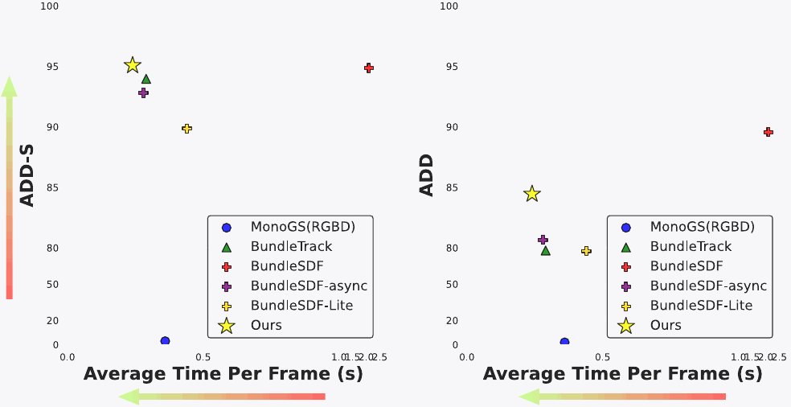
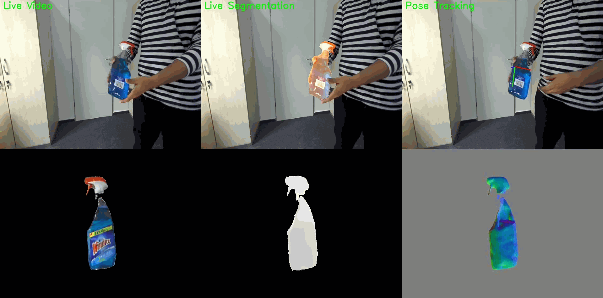

6DOPE‑GS: Online 6D Object Pose Estimation using Gaussian Splatting
Efficient and accurate object pose estimation is an essential component for modern vision systems in many applications such as Augmented Reality, autonomous driving, and robotics. While research in model-based 6D object pose estimation has delivered promising results, model-free methods are hindered by the high computational load in rendering and inferring consistent poses of arbitrary objects in a live RGB-D video stream. To address this issue, we present 6DOPE-GS, a novel method for online 6D object pose estimation & tracking with a single RGB-D camera by effectively leveraging advances in Gaussian Splatting. Thanks to the fast differentiable rendering capabilities of Gaussian Splatting, 6DOPE-GS can simultaneously optimize for 6D object poses and 3D object reconstruction. To achieve the necessary efficiency and accuracy for live tracking, our method uses incremental 2D Gaussian Splatting with an intelligent dynamic keyframe selection procedure to achieve high spatial object coverage and prevent erroneous pose updates. We also propose an opacity statistic-based pruning mechanism for adaptive Gaussian density control, to ensure training stability and efficiency. We evaluate our method on the HO3D and YCBInEOAT datasets and show that 6DOPE-GS matches the performance of state-of-the-art baselines for model-free simultaneous 6D pose tracking and reconstruction while providing a 5 speedup. We also demonstrate the method’s suitability for live, dynamic object tracking and reconstruction in a real-world setting.

1. Introduction#
Precise tracking and accurate reconstruction of objects allows capturing essential spatial and structural information, essential for downstream tasks such as robotic manipulation (Deng et al., 2020; Stevšić et al., 2020), augmented reality (Su et al., 2019; Zhao et al., 2023), automation (Kleeberger et al., 2019; Gorschlüter et al., 2022), etc. The majority of 6D object pose estimation and tracking methods, whether for seen or unseen objects, have primarily used model-based techniques. Several approaches (Nguyen et al.()Nguyen, Groueix, Salzmann, and Lepetit; Örnek et al.()Örnek, Labbé, Tekin, Ma, Keskin, Forster, and Hodan; Labbé et al., 2022; Lin et al.()Lin, Liu, Lu, and Jia; Wen et al.(c)Wen, Yang, Kautz, and Birchfield) use CAD models rendered from various angles during training and perform feature matching at inference time for rapid pose estimation. Such model-based approaches augmented with synthetic training data [Wen et al.(c)Wen, Yang, Kautz, and Birchfield] have shown state-of-the-art performance instance-level pose estimation. However, doing so requires either a CAD model or a small set of reference images annotated with the object poses, which becomes tedious as the number of unseen objects increases.
On the other hand, there has been exciting progress in zero-shot, model-free methods over the past few years [Wen and Bekris(), Wen et al.(b)Wen, Tremblay, Blukis, Tyree, Muller, Evans, Fox, Kautz, and Birchfield] which require no additional prior information, other than an object mask. BundleSDF [Wen et al.(b)Wen, Tremblay, Blukis, Tyree, Muller, Evans, Fox, Kautz, and Birchfield] operates in a model-free manner by jointly optimizing a “neural object field” and the object poses by learning a 3D Signed Distance Field representation while concurrently running a global pose graph optimization. However, despite reporting near real-time pose optimization capabilities (10Hz), the neural object field training is far from real-time, which limits the average tracking frequency to 0.4Hz. The significant computational overhead associated with training the neural object field hinders its applicability in live dynamic scenarios, where rapid pose updates are crucial.
To address this limitation, we leverage Gaussian Splatting [Kerbl et al.()Kerbl, Kopanas, Leimkühler, and Drettakis, Huang et al.()Huang, Yu, Chen, Geiger, and Gao] which offers significantly better computational efficiency for real-time applications. We propose a novel method for online 6D object pose estimation through Gaussian Splatting, “6DOPE-GS”, that enables model-free, live object tracking and reconstruction. Building upon recent advances in using Gaussian Splatting for SLAM (Keetha et al., 2024), 6DOPE-GS jointly optimizes object poses from observed keyframes and reconstructs a 3D object model on the fly using incremental 2D Gaussian Splatting [Huang et al.()Huang, Yu, Chen, Geiger, and Gao]. We propose several algorithmic enhancements to attain the required accuracy, efficiency, and training stability for live reconstruction and tracking. For accuracy, our method uses a novel dynamic keyframe selection mechanism to prioritize spatial coverage of the object and reconstruction confidence-based filtering to exclude keyframes with erroneous pose estimates. To maintain training stability and efficiency, we propose an adaptive Gaussian density control mechanism based on the opacity statistics of the Gaussians. Our contributions provide a significant speed-up in object pose estimation and tracking while maintaining high accuracy. In particular, we evaluate 6DOPE-GS on the HO3D and YCBInEOAT datasets and observe that it matches the state-of-the-art performance of competitive baselines while providing a 5 speedup. We also demonstrate the live, dynamic object tracking and reconstruction ability of 6DOPE-GS in a real-world setting. To the best of our knowledge, we are the first method to perform joint object tracking and Gaussian Splat reconstruction live at 3.5Hz from a single RGB-D camera.
Our contributions are as follows:
- We propose a novel method that effectively leverages 2D Gaussian Splatting for efficient and accurate model-free 6D object pose estimation and reconstruction.
- We leverage the computationally efficient differentiable rendering of Gaussian Splatting to jointly optimize a 2D Gaussian Splatting-based “Gaussian Object Field” along with an object-centric pose graph of observed keyframes, that provides accurate, refined keyframe pose updates.
- We propose a dynamic keyframe selection approach based on the spatial coverage of the set of keyframes and a reconstruction confidence-based filtering mechanism to exclude keyframes with erroneous pose estimates.
- We incorporate a novel adaptive Gaussian density control mechanism based on opacity percentiles to filter out “unimportant” Gaussians, thereby improving training stability and computational efficiency.
![Figure 2: Overview of our approach: 6DOPE-GS. Given a live input RGB-D video stream, we obtain object segmentation masks using SAM2 [Ravi et al.()Ravi, Gabeur, Hu, Hu, Ryali, Ma, Khedr, Rädle, Rolland, Gustafson, Mintun, Pan, Alwala, Carion, Wu, Girshick, Dollár, and Feichtenhofer] on the incoming video frames. We then use LoFTR [Sun et al.()Sun, Shen, Wang, Bao, and Zhou], a transformer-based feature matching approach, to obtain pairwise correspondences between multiple views. We initialize a set of “keyframes” based on the density of matched features, for which we establish initial coarse pose estimates using RANSAC. To obtain refined pose updates for the keyframes, we use a 2D Gaussian Splatting-based “Gaussian Object Field” that is jointly optimized with the keyframe poses in a concurrent thread. We filter out erroneous keyframes for accurate pose refinement updates using a novel dynamic keyframe selection mechanism based on spatial coverage and reconstruction confidence. Moreover, we incorporate an opacity percentile-based adaptive density control mechanism to prune out inconsequential Gaussians, thus improving training stability and efficiency. Once the Gaussian Object Field is updated, it is temporarily frozen and the poses of keyframes that were filtered out are also updated. The object pose estimate at each timestep is then obtained by performing an online pose graph optimization using the incoming keyframe with the current set of keyframes.](img/images/figures/pipeline_new.drawio.png)
2. Related Work#
2.1 Object Pose Estimation and Tracking#
Instance-level 6D object pose estimation typically requires object CAD models and/or pretraining (He et al.(c)He, Sun, Huang, Liu, Fan, and Sun; He et al.(b)He, Huang, Fan, Chen, and Sun; Labbé et al., 2020; Wang et al.(b)Wang, Xu, Zhu, Martin-Martin, Lu, Fei-Fei, and Savarese; Peng et al.()Peng, Liu, Huang, Zhou, and Bao; Lin et al.()Lin, Liu, Lu, and Jia; Wang et al.(c)Wang, Sridhar, Huang, Valentin, Song, and Guibas; Wen et al.(a)Wen, Mitash, Ren, and Bekris; Wang et al.(a)Wang, Martín-Martín, Xu, Lv, Lu, Fei-Fei, Savarese, and Zhu; Chen and Dou, 2021). Such instance-level methods can be further categorized into correspondence-based (Rad and Lepetit, 2017; Tekin et al.()Tekin, Sinha, and Fua; Pavlakos et al.()Pavlakos, Zhou, Chan, Derpanis, and Daniilidis), template-based (Sundermeyer et al., 2018; Deng et al.()Deng, Mousavian, Xiang, Xia, Bretl, and Fox), voting-based (Liu et al., 2021; He et al.(c)He, Sun, Huang, Liu, Fan, and Sun; Nguyen et al.()Nguyen, Groueix, Salzmann, and Lepetit; He et al.(b)He, Huang, Fan, Chen, and Sun; Wang et al.(b)Wang, Xu, Zhu, Martin-Martin, Lu, Fei-Fei, and Savarese), and regression-based (Gao et al., 2020; Hu et al., 2020) methods. For better generalization, some approaches use an object CAD model only at inference time (Örnek et al.()Örnek, Labbé, Tekin, Ma, Keskin, Forster, and Hodan; Labbé et al., 2022; Shugurov et al., 2022). Other methods (Liu et al.()Liu, Wen, Peng, Lin, Long, Komura, and Wang; Park et al., 2020; He et al.(a)He, Sun, Wang, Huang, and Zhou; He et al.(d)He, Wang, Fan, Sun, and Chen; Sun et al., 2022; Wen et al.(c)Wen, Yang, Kautz, and Birchfield; Chen et al., 2024) relax this assumption by utilizing only few reference images of the object instead of the CAD model.
BundleTrack [Wen and Bekris()] enables near real-time (10Hz), model-free tracking with a SLAM-style approach. It uses keyframe point correspondences for coarse pose initialization with RANSAC, followed by object-centric pose graph optimization for refined estimates. BundleSDF [Wen et al.(b)Wen, Tremblay, Blukis, Tyree, Muller, Evans, Fox, Kautz, and Birchfield] extends this by jointly performing pose tracking and object reconstruction through a neural object field, achieving state-of-the-art results in model-free settings. However, the neural field training is slow and computationally demanding (6.7s per training round [Wen et al.(b)Wen, Tremblay, Blukis, Tyree, Muller, Evans, Fox, Kautz, and Birchfield]), limiting its real-time applicability. We address this key limitation by leveraging the efficiency of Gaussian Splatting for joint object reconstruction and pose refinement, enabling effective live tracking.
2.2 3D Reconstruction#
3D Reconstruction is a well-studied problem in Photogrammetry. Structure from Motion (SfM) (Özyeşil et al., 2017) is a commonly used approach to estimate camera poses and a sparse 3D structure from images without prior pose knowledge in an offline manner. Multi-View Stereo approaches (MVS) (Furukawa et al., 2015; Wang et al., 2021) build upon such pose estimates to refine a dense 3D reconstruction. For enabling more real-time reconstruction and pose tracking, Simultaneous Localization and Mapping (SLAM) methods (Kazerouni et al., 2022; Macario Barros et al., 2022; Chen et al., 2022) approach the problem by jointly optimizing the camera poses and the environment reconstruction. Emerging methods that leverage neural representations have enhanced the fidelity of 3D reconstructions (Wang et al., 2024; Zhang et al., 2024; Wang and Agapito, 2024; Ren et al., 2023). Along similar lines, the use of Neural Radiance Fields (NeRFs) (Mildenhall et al., 2021) and Signed Distance Fields (SDFs) (Ortiz et al., 2022; Chibane et al., 2020; Park et al., 2019; Mescheder et al., 2019), with their volumetric rendering approach provide highly photorealistic reconstructions.
Gaussian Splatting [Kerbl et al.()Kerbl, Kopanas, Leimkühler, and Drettakis] is a particle-based alternative that models scene density with Gaussian distributions and achieves significantly faster rendering speeds with similar levels of photorealism by using rasterization of explicit Gaussian particles, thereby avoiding the ray-marching steps used by volumetric rendering methods. Recently, 2D Gaussian Splatting [Huang et al.()Huang, Yu, Chen, Geiger, and Gao] has improved the surface rendering capabilities of Gaussian Splatting by optimizing oriented planar 2D Gaussian disks close to the scene surfaces. However, all these methods still depend on pre-established camera poses. Coming from a SLAM perspective, recent approaches explore jointly optimizing camera pose estimates as well as the map reconstruction that uses Gaussian Splatting (Keetha et al., 2024; Yan et al., 2024; Matsuki et al., 2024; Luiten et al., 2024). In this work, we propose a novel method that extends scene-level approaches to object-level tracking and reconstruction by leveraging the SLAM-inspired capabilities for object tracking [Wen and Bekris(), Wen et al.(b)Wen, Tremblay, Blukis, Tyree, Muller, Evans, Fox, Kautz, and Birchfield] and Gaussian Splatting (Keetha et al., 2024; Yan et al., 2024; Matsuki et al., 2024) with the precise surface rendering capabilities offered by 2D Gaussian Splatting [Huang et al.()Huang, Yu, Chen, Geiger, and Gao].
3. Method#
We introduce a novel method for real-time 6D Object Pose Estimation using the representation capabilities of 2D Gaussian Splatting. Fig. 2 presents a schematic overview of our approach. To accurately track the 6DoF pose of an object captured by a single RGB-D camera, we start by segmenting the object in the first frame using SAM2 [Ravi et al.()Ravi, Gabeur, Hu, Hu, Ryali, Ma, Khedr, Rädle, Rolland, Gustafson, Mintun, Pan, Alwala, Carion, Wu, Girshick, Dollár, and Feichtenhofer] to ensure precise object segmentation throughout the video sequence. With the object segmented across multiple frames, we apply LoFTR [Sun et al.()Sun, Shen, Wang, Bao, and Zhou] to establish point correspondences, identifying keyframes for a Coarse Pose Initialization via Bundle Adjustment [Wen and Bekris()] (Sec. 3.1). This initial set of coarsely estimated keyframes is then refined through a joint optimization with 2D Gaussians using differentiable rendering, yielding accurate pose corrections and an improved object model for the keyframes (Sec. 3.2). To improve the quality of the generated 3D model and to subsequently enable a more accurate pose refinement, we propose a dynamic keyframe selection technique for selecting the best keyframes for optimizing the 2D Gaussians based on their estimated spatial coverage around the object and their reconstruction accuracy (Sec. 3.3). During this phase, we iteratively employ a novel pruning/adaptive density control mechanism to stabilize the number of Gaussian particles required, to balance computational efficiency with reconstruction accuracy (Sec. 3.4). Once the joint optimization converges, all the keyframe poses are subsequently optimized and help guide the Online Pose Graph Optimization (Sec. 3.5) in continuously refining the object pose at each subsequent timestep for robust and precise tracking.
3.1 Coarse Pose Initialization#
To enable real-time 6D pose tracking and reconstruction of arbitrary objects, we first use SAM2 [Ravi et al.()Ravi, Gabeur, Hu, Hu, Ryali, Ma, Khedr, Rädle, Rolland, Gustafson, Mintun, Pan, Alwala, Carion, Wu, Girshick, Dollár, and Feichtenhofer] for facilitating effective segmentation and tracking of the object in question. Specifically, we use a fixed-length window of past frames combined with prompted images as input. We then use LoFTR [Sun et al.()Sun, Shen, Wang, Bao, and Zhou], a transformer-based dense feature matcher, to estimate feature point correspondences between neighboring images. Using these matches, we compute a coarse pose estimate between pairs of RGB-D frames with nonlinear least-squares optimization (Arun et al., 1987) in a RANSAC fashion (Fischler and Bolles, 1981). Subsequently, a keyframe memory pool is created wherein if an incoming frame is deemed to be spatially diverse compared to the existing pool, it is added as a new keyframe. Further details regarding the feature matching and the keyframe memory pool initialization are in [Wen et al.(b)Wen, Tremblay, Blukis, Tyree, Muller, Evans, Fox, Kautz, and Birchfield].
3.2 Gaussian Object Field#
To build an internal model that captures the visual and geometric properties of the object in an efficient and accurate manner, we build a Gaussian Object Field using 2D Gaussian Splatting (2DGS) [Huang et al.()Huang, Yu, Chen, Geiger, and Gao] to achieve precise surface geometry reconstruction. Unlike 3D Gaussian Splatting (3DGS) [Kerbl et al.()Kerbl, Kopanas, Leimkühler, and Drettakis], which primarily emphasizes on redering realistic visual effects, 2DGS ensures accurate geometric alignment by converting each Gaussian into a disk-like surfel. This surfel-based approach, combined with our novel dynamic keyframe selection (Sec. 3.3) and opacity quartile-based pruning (Sec. 3.4), enables 2DGS to precisely model the rendered surface, thereby delivering reliable depth estimates and addressing the limitations observed in 3DGS.
In 3DGS, a scene is represented as a set of 3D Gaussian particles, each of which represents a 3D distribution and is defined by its 3D centroid (mean) and a covariance matrix which can be decomposed into a diagonalized scaling matrix and a rotation matrix as , which denotes the volume (spread) of the particle in 3D space. Along with the mean and covariance, each Gaussian is further characterized by spherical harmonic coefficients to represent view-dependent appearance, and an opacity value . For rendering, each 3D Gaussian is converted to camera coordinates using the world-to-camera transformation matrix and mapped to the image plane via a local affine transformation , . Once the 3D Gaussian is “splatted” onto the image plane, excluding the third row and column of results in a 2D covariance matrix that represents a 2D Gaussian in the image plane. The Gaussians are first ordered in ascending order based on their distance to the camera origin. Using volumetric rendering, we calculate the per-pixel color estimates of a pixel as the -blending of ordered Gaussians from front to back along the view direction
where and denote the opacity and the view-dependent appearance of the th Gaussian, respectively. The depth image can be similarly rendered by replacing with the z-depth coordinate of the th Gaussian in the camera frame.
For 2DGS [Huang et al.()Huang, Yu, Chen, Geiger, and Gao], the -component of the scaling matrix is set to zero for each Gaussian, thereby collapsing the 3D volume into a set of 2D oriented planar Gaussian disks with two principal axes and . The normal to the 2D Gaussian can then be defined as , which allows us to define the rotation matrix for the Gaussian particle as . Moreover, along with photometric reconstruction, 2DGS additionally incorporates depth distortion and normal consistency to further enhance the quality of the reconstructions. For further details regarding 2DGS, please refer to [Huang et al.()Huang, Yu, Chen, Geiger, and Gao].
In our approach, along with optimizing the parameters of each 2D Gaussian, we aim to jointly refine the keyframe poses as well. We do so by propagating the gradients of losses through the projection operation of the 2D Gaussians onto the image plane of each keyframe, as done in (Keetha et al., 2024; Yan et al., 2024; Matsuki et al., 2024). We use automatic differentiation via PyTorch (Paszke et al., 2017) for calculating the gradients and updating the keyframe poses. Further details are in Appendix.
3.3 Dynamic Keyframe Selection for Gaussian Splatting Optimization#
Once we obtain a coarse pose initialization of keyframes, we aim to construct a 2DGS model of the object. However, errors in the pose initialization can cause a divergence in the Gaussian Splatting optimization. Unlike BundleSDF’s ray-casting method [Wen et al.(b)Wen, Tremblay, Blukis, Tyree, Muller, Evans, Fox, Kautz, and Birchfield], which renders individual pixels, Gaussian Splatting uses tile-based rasterization, rendering entire images one at a time, thereby increasing the computational cost linearly as the number of keyframes increases. To mitigate these issues, we introduce a dynamic keyframe selection approach to filter out erroneous keyframes.
To acquire a reliable Gaussian Object Field, we strategically sparsely select keyframes to optimize keyframe poses and object Gaussians. We first establish a series of “anchor points” at varying resolution levels, using the vertices and face centers of an icosahedron (as shown in Fig. 2-bottom left) to approximate evenly distributed points on a sphere centered on the object (Saff and Kuijlaars, 1997). We then cluster the initial coarse keyframe pose estimates around these anchor points along the icosahedron. To maximize information from all viewpoints around the object, we select the keyframe with the largest object mask in the cluster of each anchor point, effectively training under sparse-view conditions with the aid of depth information (Li et al., 2025). This ensures that we minimize instances where the object is largely occluded and consider views where we have better visibility of the object.
While jointly optimizing the 2D Gaussians and the selected keyframe poses, we further remove outliers with erroneous pose estimates based on the reconstruction error obtained during the 2D Gaussian optimization. This approach is necessary because reconstruction residuals can impede pose optimization during the joint optimization of 2D Gaussians and keyframe poses. Specifically, we estimate the median absolute deviation (MAD) of the reconstruction loss at each iteration, which represents the typical “spread” around the median value, to identify and remove outlier views. The rationale for using MAD lies in its robustness; as a median-based metric, MAD is less influenced by extreme values than other measures, such as the mean or standard deviation, making it more reliable in the presence of outliers. Views with absolute deviations exceeding three times the MAD are classified as outliers.
3.4 Opacity Percentile-based Adaptive Density Control#
During the optimization of the Gaussian Object Field, we perform periodic pruning and densification to maintain both the number and compactness of Gaussians. However, the vanilla Adaptive Density Control proposed in 3DGS has several limitations [Bulò et al.()Bulò, Porzi, and Kontschieder], since it demands considerable engineering work to adjust densification intervals and fine-tune opacity thresholds to stabilize training. Prior work (Deng and Tartaglione, 2023) demonstrates that a gradual iterative pruning strategy can yield significantly sparser models while preserving high fidelity. Similarly, Fan et al. (Fan et al., 2023) propose an importance weighting based on the scale percentile and the opacity of the Gaussians. However, they mainly focus on efficient compression of Gaussians. Inspired by (Fan et al., 2023), and since we have an object-centric focus, we limit the scale of the Gaussians and instead use a percentile-based pruning strategy based on opacity for stabilizing the number of Gaussians.
After a fixed number of optimization steps, we prune the Gaussians with opacity in the bottom 5th percentile until the opacity of the 95th percentile of the Gaussian particles exceeds a given threshold. This allows us to ensure that during the forward rendering (Eq. 1), a good number of high-quality Gaussian particles remain and those that are more inconsequential get pruned out. We empirically verify that our approach compared to naive absolute thresholding [Kerbl et al.()Kerbl, Kopanas, Leimkühler, and Drettakis], improves the performance of our method. We further trigger splitting and cloning of the Gaussian particles when the positional gradient exceeds a predefined threshold, similar to [Kerbl et al.()Kerbl, Kopanas, Leimkühler, and Drettakis]. Notably, the variation of the positional gradient remains relatively stable and does not continuously increase during training. Once the optimization of the Gaussian Object Field converges, the poses of all the keyframes are refined using the reconstruction of the RGB, depth, and normals, by temporarily freezing the 2D Gaussians.
3.5 Online Pose Graph Optimization#
When we receive the updated poses for the keyframes from the Gaussian Object Field, we establish a global object-centric coordinate system and a keyframe memory pool, which stores key correspondences. To balance computational efficiency with memory usage and reduce long-term tracking drift when a new frame is observed, a set of overlapping frames from the memory pool is selected for graph optimization based on the view frustum of the incoming frame. For each frame in this pool, we generate a point-normal map and compute the dot-product of the normals with the camera-ray direction of the new frame, to assess visibility. Frames are selected if the visibility ratio of the new incoming frame exceeds a defined threshold. We choose the best keyframes from the pool to construct the pose graph along with the incoming frame. We optimize the pose graph using pairwise geometric consistency by minimizing a dense pixel-wise re-projection error as in [Wen and Bekris()].
4. Experiments#
![Figure 3: Qualitative results of our method, 6DOPE-GS, tested on video sequences from the HO3D dataset, namely AP13, MPM14, SB13, and SM1 (from top to bottom). Left: Our method tracks the 6D object pose over time with high accuracy, Right: 6DOPE-GS is effective at reconstructing both the appearance (rows 1 and 3) and surface geometry (rows 2 and 4) of the object over time. The first image shows the initial reconstruction at the beginning of the sequence, the second image shows the refined reconstruction over time.](img/images/figures/qual_results.drawio.png)
4.1 Datasets#
4.1.1 YCBInEOAT Dataset#
The YCBInEOAT dataset (Wen et al., 2020) offers ego-centric RGB-D video recordings of a dual-arm Yaskawa Motoman SDA10f robot manipulating YCB objects. Using an Azure Kinect camera positioned at mid-range, the dataset captures three types of manipulation tasks: single-arm pick-and-place, within-hand manipulation, and handoff between arms. In total, it includes 5 YCB objects (Xiang et al., 2017) across 9 video sequences, amounting to 7,449 frames. Each frame is annotated with accurate 6D object poses, calibrated with the camera’s extrinsic parameters.
4.1.2 HO3D Dataset#
The HO3D dataset (Hampali et al., 2020) features 27 multi-view (68 single-view) sequences showing hand-object interactions involving 10 YCB objects (Xiang et al., 2017) with annotated 3D poses. The RGB-D video data, captured at close range with an Intel RealSense camera, provides detailed records of hand manipulations of objects. Ground-truth 3D poses are generated via multi-view registration, facilitating evaluations of pose, reconstruction, and texture accuracy. We use the latest version, HO3D_v3, and conduct evaluations on the official test set, which comprises 4 objects and 13 sequences.
4.2 Metrics & Baselines#
We evaluate the performance of different methods based on three key metrics: 6-DoF object pose tracking accuracy, 3D reconstruction accuracy, and computational efficiency. Pose estimation accuracy is assessed using the area under the curve percentage for the ADD and ADD-S (ADD-Symmetric) metrics (He et al.(d)He, Wang, Fan, Sun, and Chen; Xiang et al., 2017). For object reconstruction, we measure the Chamfer distance between the reconstructed and ground-truth object meshes in object coordinates. Computational efficiency is evaluated based on the average processing time per frame.
We compare several SLAM-based approaches, including DROID-SLAM (RGBD) (Teed and Deng, 2021), NICE-SLAM (Zhu et al., 2022), KinectFusion (Newcombe et al., 2011), and SDF-2-SDF (Slavcheva et al., 2016). We report the performance of other approaches listed on the leaderboard of [Wen et al.(b)Wen, Tremblay, Blukis, Tyree, Muller, Evans, Fox, Kautz, and Birchfield]. We also evaluate the recent 3DGS-SLAM-based method MonoGS [Matsuki et al.()Matsuki, Murai, Kelly, and Davison], along with BundleTrack [Wen and Bekris()] and BundleSDF [Wen et al.(b)Wen, Tremblay, Blukis, Tyree, Muller, Evans, Fox, Kautz, and Birchfield], using their open-source implementations, with optimized parameters. Each method takes as input an RGBD video and a per-frame mask indicating the object of interest. For a fair comparison, we evaluate MonoGS using only RGBD input.
| Method | Pose | Reconstruction | Efficiency | |
|---|---|---|---|---|
| ADD-S (%) | ADD (%) | CD (cm) | ATPF(s) | |
| NICE-SLAM (Zhu et al., 2022) | 23.41 | 12.70 | 6.13 | n.a. |
| SDF-2-SDF (Slavcheva et al., 2016) | 28.20 | 14.04 | 2.61 | n.a. |
| DROID-SLAM (Teed and Deng, 2021) | 46.39 | 34.68 | 4.63 | n.a. |
| MaskFusion (Runz et al., 2018) | 41.88 | 35.07 | 2.34 | n.a. |
| MonoGS(RGB-D) [Matsuki et al.()Matsuki, Murai, Kelly, and Davison] | 20.16 | 15.32 | 2.43 | 0.29 |
| BundleTrack [Wen and Bekris()] | 92.54 | 84.91 | - | 0.21 |
| BundleSDF [Wen et al.(b)Wen, Tremblay, Blukis, Tyree, Muller, Evans, Fox, Kautz, and Birchfield] | 92.82 | 84.28 | 0.53 | 0.82 |
| 6DOPE-GS | 93.79 | 87.82 | 0.15 | 0.22 |
4.3 Results#
As seen in Tables 2 and 2, we outperform previous SLAM-based approaches as well as BundleTrack [Wen and Bekris()]. In the YCBInEOAT dataset (Table 2), where object motions are relatively smooth with less viewpoint diversity, most approaches perform similarly due to the absence of large occlusions or abrupt motion discontinuities that could lead to erroneous coarse pose initialization. We also compare our method to MonoGS [Matsuki et al.()Matsuki, Murai, Kelly, and Davison], a state-of-the-art SLAM approach that employs Gaussian splitting for camera pose relocalization. On the YCBInEOAT dataset, MonoGS performs suboptimally due to limited geometric and textural supervision, leading to degraded object pose refinement, particularly in low-texture regions. On the HO3D dataset (Table 2), which presents more challenging scenarios with complex hand-object interactions and rapid motion variations, all baselines struggle with accurate tracking due to accumulating errors. In contrast, our pose graph optimization and keyframe selection enhance robustness in the coarse pose initialization and pose tracking efficiency, which further results in superior reconstruction at a sub-centimeter level. 6DOPE-GS maintains a strong balance between pose accuracy and temporal efficiency, making it well-suited for real-time applications.
While 6DOPE-GS performs better than BundleSDF [Wen et al.(b)Wen, Tremblay, Blukis, Tyree, Muller, Evans, Fox, Kautz, and Birchfield] in the ADD-symmetric score, we still fall behind in the absolute score on the more challenging HO3D dataset. One possible reason is the occlusions in HO3D, which reduce the supervisory signals needed to optimize Gaussian Particles and refine pose estimates. In contrast, BundleSDF uses mini-batch SDF rendering, allowing multiple correlated optimization steps and achieving better performance. However, the high computational cost of BundleSDF limits its applicability for real-time scenarios. Our method, by contrast, provides a well-balanced trade-off between efficiency and accuracy, making it a more practical choice for real-world applications. Some examples of the precise pose tracking and accurate surface and appearance reconstruction of 6DOPE-GS are shown in Fig. 3.

4.4 Temporal Efficiency#
To evaluate the temporal efficiency of different approaches, we compare the tradeoff between the performance and the average processing time per frame for the different approaches on the HO3D dataset. We test the approaches on a desktop with a 12th Gen Intel(R) Core(TM) i9-12900KF CPU, 64GB RAM, equipped with an NVIDIA GeForce RTX 4090 GPU. We explore the performance of two more versions of BundleSDF [Wen et al.(b)Wen, Tremblay, Blukis, Tyree, Muller, Evans, Fox, Kautz, and Birchfield] that reduce the processing time. In the first version, named “BundleSDF-async”, we deactivate the synchronization between the threads performing neural object field learning and the online pose graph optimization. While this introduces potential variability in pose accuracy, it reduces latency and achieves more real-time performance. In another version, “BundleSDF-lite”, we reduce the number of optimization steps for learning the neural object field, enabling faster synchronization between the threads.
From Fig. 4, we observe that the high pose tracking accuracy of BundleSDF [Wen et al.(b)Wen, Tremblay, Blukis, Tyree, Muller, Evans, Fox, Kautz, and Birchfield] comes at a high computational cost. Since the pose tracking thread waits for the neural object field thread to converge and subsequently synchronize the object pose and reconstruction estimates, it requires an average processing time of 2.1 seconds. Surprisingly, BundleSDF-async (without the sync between the threads) achieves better performance than BundleSDF-lite even though BundleSDF-async runs the pose estimation without waiting for the neural object field. This highlights the dependence of the pose graph optimization on accurate keyframe poses. While the neural object field training in BundleSDF-async yields more accurate poses (although at a delayed timestep) than BundleSDF-lite, the pose estimation of the latter diverges given the premature termination of the optimization to achieve faster speeds. In contrast, 6DOPE-GS provides a balanced tradeoff between speed and accuracy. We achieve competitive performance without having to compromise on speed (5 speedup over BundleSDF) as a result of the rapid convergence of the Gaussian Object Field optimization.
4.5 Ablation Study#
We assessed our design choices on both the HO3D and YCBInEoat dataset, chosen for its variety of scenarios, the results of which are shown in Table 3. Ours (basic) is a simplified version of 6DOPE-GS that naively uses all keyframes and employs vanilla adaptive density control. Ours w/o KF Selection removes the dynamic keyframe selection strategy (Sec. 3.3) and performs joint optimization using all keyframes. Ours w/o Pruning replaces the Opacity Percentile-based Adaptive Density Control 3.4 and employs vanilla adaptive density control [Kerbl et al.()Kerbl, Kopanas, Leimkühler, and Drettakis]. We also compare 2DGS and 3DGS representation, Ours (3DGS) replaces the 2D Gaussian representation with a 3D Gaussian representation for pose estimation and reconstruction.
Performance was reduced without dynamic keyframe selection (Ours w/o KF selection) due to the retention of inaccurate pose estimates during training, which introduces residual errors in the reconstruction loss and hinders pose optimization. Applying the vanilla adaptive density control (Ours w/o Pruning), where all Gaussians below a predefined threshold are removed, causes abrupt changes in the number of Gaussians. This results in significant rendering fluctuations, slowing the convergence of training. The pose accuracy and reconstruction quality of 3DGS (Ours (3DGS)) are inferior to 2DGS. This can be attributed to the lack of regularization on the normal and depth in 3DGS, causing the Gaussians to deviate from the object surface and consequently degrading the reconstruction quality. We find that our approach with the proposed additions, namely Dynamic Keyframe Selection and the Opacity Percentile-based Adaptive Density Control performs the best among all.
| Method | Pose | Reconstruction | ||
|---|---|---|---|---|
| ADD-S (%) | ADD (%) | CD (cm) | ||
| HO3D | Ours (basic) | 93.52 | 80.25 | 0.44 |
| Ours w/o KF Selection | 94.44 | 82.40 | 0.42 | |
| Ours w/o Pruning | 92.48 | 80.87 | 0.44 | |
| Ours (3DGS) | 92.51 | 79.49 | 0.47 | |
| Ours (final) | 95.07 | 84.33 | 0.41 | |
| YCBInEOAT | Ours (basic) | 92.74 | 85.15 | 0.22 |
| Ours w/o KF Selection | 93.03 | 86.40 | 0.19 | |
| Ours w/o Pruning | 92.64 | 86.22 | 0.20 | |
| Ours (3DGS) | 91.18 | 85.29 | 0.41 | |
| Ours (final) | 93.79 | 87.82 | 0.15 | |
4.6 Realtime Results#

We utilized the ZED 2 camera operating in the standard depth sensing mode to maintain a balance between frame rate and accuracy. The camera captures video at a resolution of 1080p with a frame rate of 30 FPS. An initial mask for the target object was manually created through human annotation. The SAM2 system also operates at 28 FPS. Pose tracking, when running in visualization mode, achieves a processing frequency of 3-4 Hz, primarily due to the computational overhead introduced by the GUI and the rendering of Gaussian models in the background. Without the GUI, the system can operate at a slightly higher frequency of 4-5 Hz. The Gaussian model updates approximately every 8 seconds, as illustrated in Fig 5. For a more comprehensive understanding of the system’s performance, we encourage readers to refer to the supplementary video provided.
5. Conclusion#
In this paper, we proposed “6DOPE-GS”, a novel method for model-free 6D object pose estimation and reconstruction that leveraged 2D Gaussian Splatting for jointly optimizing object pose estimates and 3D reconstruction in an iterative manner. Key to our method’s efficiency were a novel dynamic keyframe selection mechanism based on spatial coverage, as well as a confidence-based filtering mechanism to remove erroneous keyframes, followed by an opacity percentile-based adaptive density control for pruning out inconsequential Gaussians. These contributions enabled 6DOPE-GS to achieve competitive performance in a computationally efficient manner (5 speedup), as validated on the HO3D and YCBInEOAT datasets, successfully capturing a practical balance of speed, accuracy, and stability for dynamic tracking scenarios in near real-time.
However, some shortcomings remain, which we aim to address in future work. Although Gaussian rasterization rendering is highly efficient and allows for rapid refinement of small translation and in-plane rotation errors, it may be less effective in gradient computations compared to differentiable ray casting used by neural radiance fields. To address this, we plan to investigate ray casting for rendering Gaussian representations (Moenne-Loccoz et al., 2024; Gu et al.()Gu, Wei, Zeng, Yao, and Zhang), which could improve both performance and computational efficiency. Another potential limitation is that the optimized 2D Gaussians are not directly integrated into the online pose graph optimization; instead, only the optimized poses are used. In future work, we will explore ways to more closely couple the trained object representation with the pose graph optimization.
References#
- [Arun et al., 1987] Least-squares fitting of two 3-d point sets. IEEE Transactions on pattern analysis and machine intelligence, (5): 698–700, 1987.
- [Bulò et al.()Bulò, Porzi, and Kontschieder] Revising Densification in Gaussian Splatting.
- [Chen et al., 2024] Zeropose: Cad-prompted zero-shot object 6d pose estimation in cluttered scenes. IEEE Transactions on Circuits and Systems for Video Technology, 2024.
- [Chen and Dou, 2021] Sgpa: Structure-guided prior adaptation for category-level 6d object pose estimation. In Proceedings of the IEEE/CVF International Conference on Computer Vision, pages 2773–2782, 2021.
- [Chen et al., 2022] An overview on visual slam: From tradition to semantic. Remote Sensing, 14 (13): 3010, 2022.
- [Chibane et al., 2020] Neural unsigned distance fields for implicit function learning. Advances in Neural Information Processing Systems, 33: 21638–21652, 2020.
- [Deng and Tartaglione, 2023] Compressing explicit voxel grid representations: fast nerfs become also small. In Proceedings of the IEEE/CVF Winter Conference on Applications of Computer Vision, pages 1236–1245, 2023.
- [Deng et al.()Deng, Mousavian, Xiang, Xia, Bretl, and Fox] PoseRBPF: A Rao–Blackwellized Particle Filter for 6-D Object Pose Tracking. 37 (5): 1328–1342.
- [Deng et al., 2020] Self-supervised 6d object pose estimation for robot manipulation. In 2020 IEEE International Conference on Robotics and Automation (ICRA), pages 3665–3671. IEEE, 2020.
- [Fan et al., 2023] Lightgaussian: Unbounded 3d gaussian compression with 15x reduction and 200+ fps. arXiv preprint arXiv:2311.17245, 2023.
- [Fischler and Bolles, 1981] Random sample consensus: a paradigm for model fitting with applications to image analysis and automated cartography. Communications of the ACM, 24 (6): 381–395, 1981.
- [Furukawa et al., 2015] Multi-view stereo: A tutorial. Foundations and Trends® in Computer Graphics and Vision, 9 (1-2): 1–148, 2015.
- [Gao et al., 2020] 6d object pose regression via supervised learning on point clouds. In 2020 IEEE International Conference on Robotics and Automation (ICRA), pages 3643–3649. IEEE, 2020.
- [Gorschlüter et al., 2022] A survey of 6d object detection based on 3d models for industrial applications. Journal of Imaging, 8 (3): 53, 2022.
- [Gu et al.()Gu, Wei, Zeng, Yao, and Zhang] IRGS: Inter-Reflective Gaussian Splatting with 2D Gaussian Ray Tracing.
- [Hampali et al., 2020] Honnotate: A method for 3d annotation of hand and object poses. In Proceedings of the IEEE/CVF conference on computer vision and pattern recognition, pages 3196–3206, 2020.
- [He et al.(a)He, Sun, Wang, Huang, and Zhou] OnePose++: Keypoint-Free One-Shot Object Pose Estimation without CAD Models. a.
- [He et al.(b)He, Huang, Fan, Chen, and Sun] FFB6D: A Full Flow Bidirectional Fusion Network for 6D Pose Estimation. In 2021 IEEE/CVF Conference on Computer Vision and Pattern Recognition (CVPR), pages 3002–3012. IEEE, b.
- [He et al.(c)He, Sun, Huang, Liu, Fan, and Sun] PVN3D: A Deep Point-Wise 3D Keypoints Voting Network for 6DoF Pose Estimation. In 2020 IEEE/CVF Conference on Computer Vision and Pattern Recognition (CVPR), pages 11629–11638. IEEE, c.
- [He et al.(d)He, Wang, Fan, Sun, and Chen] FS6D: Few-Shot 6D Pose Estimation of Novel Objects. In 2022 IEEE/CVF Conference on Computer Vision and Pattern Recognition (CVPR), pages 6804–6814. IEEE, d.
- [Hu et al., 2020] Single-stage 6d object pose estimation. In Proceedings of the IEEE/CVF conference on computer vision and pattern recognition, pages 2930–2939, 2020.
- [Huang et al.()Huang, Yu, Chen, Geiger, and Gao] 2D Gaussian Splatting for Geometrically Accurate Radiance Fields.
- [Kazerouni et al., 2022] A survey of state-of-the-art on visual slam. Expert Systems with Applications, 205: 117734, 2022.
- [Keetha et al., 2024] Splatam: Splat track & map 3d gaussians for dense rgb-d slam. In Proceedings of the IEEE/CVF Conference on Computer Vision and Pattern Recognition, pages 21357–21366, 2024.
- [Kerbl et al.()Kerbl, Kopanas, Leimkühler, and Drettakis] 3D Gaussian Splatting for Real-Time Radiance Field Rendering.
- [Kleeberger et al., 2019] Large-scale 6d object pose estimation dataset for industrial bin-picking. In 2019 IEEE/RSJ International Conference on Intelligent Robots and Systems (IROS), pages 2573–2578. IEEE, 2019.
- [Labbé et al., 2020] Cosypose: Consistent multi-view multi-object 6d pose estimation. In Computer Vision–ECCV 2020: 16th European Conference, Glasgow, UK, August 23–28, 2020, Proceedings, Part XVII 16, pages 574–591. Springer, 2020.
- [Labbé et al., 2022] Megapose: 6d pose estimation of novel objects via render & compare. arXiv preprint arXiv:2212.06870, 2022.
- [Li et al., 2025] Geogaussian: Geometry-aware gaussian splatting for scene rendering. In European Conference on Computer Vision, pages 441–457. Springer, 2025.
- [Lin et al.()Lin, Liu, Lu, and Jia] SAM-6D: Segment Anything Model Meets Zero-Shot 6D Object Pose Estimation. In 2024 IEEE/CVF Conference on Computer Vision and Pattern Recognition (CVPR), pages 27906–27916. IEEE.
- [Liu et al., 2021] Kdfnet: Learning keypoint distance field for 6d object pose estimation. In 2021 IEEE/RSJ International Conference on Intelligent Robots and Systems (IROS), pages 4631–4638. IEEE, 2021.
- [Liu et al.()Liu, Wen, Peng, Lin, Long, Komura, and Wang] Gen6D: Generalizable Model-Free 6-DoF Object Pose Estimation from RGB Images.
- [Luiten et al., 2024] Dynamic 3d gaussians: Tracking by persistent dynamic view synthesis. In 2024 International Conference on 3D Vision (3DV), pages 800–809. IEEE, 2024.
- [Macario Barros et al., 2022] A comprehensive survey of visual slam algorithms. Robotics, 11 (1): 24, 2022.
- [Matsuki et al.()Matsuki, Murai, Kelly, and Davison] Gaussian Splatting SLAM.
- [Matsuki et al., 2024] Gaussian splatting slam. In Proceedings of the IEEE/CVF Conference on Computer Vision and Pattern Recognition, pages 18039–18048, 2024.
- [Mescheder et al., 2019] Occupancy networks: Learning 3d reconstruction in function space. In Proceedings of the IEEE/CVF conference on computer vision and pattern recognition, pages 4460–4470, 2019.
- [Mildenhall et al., 2021] Nerf: Representing scenes as neural radiance fields for view synthesis. Communications of the ACM, 65 (1): 99–106, 2021.
- [Moenne-Loccoz et al., 2024] 3d gaussian ray tracing: Fast tracing of particle scenes. arXiv preprint arXiv:2407.07090, 2024.
- [Newcombe et al., 2011] Kinectfusion: Real-time dense surface mapping and tracking. In 2011 10th IEEE international symposium on mixed and augmented reality, pages 127–136. Ieee, 2011.
- [Nguyen et al.()Nguyen, Groueix, Salzmann, and Lepetit] GigaPose: Fast and Robust Novel Object Pose Estimation via One Correspondence. In 2024 IEEE/CVF Conference on Computer Vision and Pattern Recognition (CVPR), pages 9903–9913. IEEE.
- [Ortiz et al., 2022] isdf: Real-time neural signed distance fields for robot perception. In Robotics: Science and Systems, 2022.
- [Özyeşil et al., 2017] A survey of structure from motion*. Acta Numerica, 26: 305–364, 2017.
- [Park et al., 2019] Deepsdf: Learning continuous signed distance functions for shape representation. In Proceedings of the IEEE/CVF conference on computer vision and pattern recognition, pages 165–174, 2019.
- [Park et al., 2020] Latentfusion: End-to-end differentiable reconstruction and rendering for unseen object pose estimation. In Proceedings of the IEEE/CVF conference on computer vision and pattern recognition, pages 10710–10719, 2020.
- [Paszke et al., 2017] Automatic differentiation in pytorch. 2017.
- [Pavlakos et al.()Pavlakos, Zhou, Chan, Derpanis, and Daniilidis] 6-DoF object pose from semantic keypoints. In 2017 IEEE International Conference on Robotics and Automation (ICRA), pages 2011–2018.
- [Peng et al.()Peng, Liu, Huang, Zhou, and Bao] PVNet: Pixel-Wise Voting Network for 6DoF Pose Estimation. pages 4561–4570.
- [Rad and Lepetit, 2017] Bb8: A scalable, accurate, robust to partial occlusion method for predicting the 3d poses of challenging objects without using depth. In Proceedings of the IEEE international conference on computer vision, pages 3828–3836, 2017.
- [Ravi et al.()Ravi, Gabeur, Hu, Hu, Ryali, Ma, Khedr, Rädle, Rolland, Gustafson, Mintun, Pan, Alwala, Carion, Wu, Girshick, Dollár, and Feichtenhofer] SAM 2: Segment Anything in Images and Videos.
- [Ren et al., 2023] Deepsfm: Robust deep iterative refinement for structure from motion. IEEE Transactions on Pattern Analysis and Machine Intelligence, 46 (6): 4058–4074, 2023.
- [Runz et al., 2018] Maskfusion: Real-time recognition, tracking and reconstruction of multiple moving objects. In 2018 IEEE International Symposium on Mixed and Augmented Reality (ISMAR), pages 10–20. IEEE, 2018.
- [Saff and Kuijlaars, 1997] Distributing many points on a sphere. The mathematical intelligencer, 19: 5–11, 1997.
- [Shugurov et al., 2022] Osop: A multi-stage one shot object pose estimation framework. In Proceedings of the IEEE/CVF Conference on Computer Vision and Pattern Recognition, pages 6835–6844, 2022.
- [Slavcheva et al., 2016] Sdf-2-sdf: Highly accurate 3d object reconstruction. In Computer Vision–ECCV 2016: 14th European Conference, Amsterdam, The Netherlands, October 11–14, 2016, Proceedings, Part I 14, pages 680–696. Springer, 2016.
- [Stevšić et al., 2020] Learning to assemble: Estimating 6d poses for robotic object-object manipulation. IEEE Robotics and Automation Letters, 5 (2): 1159–1166, 2020.
- [Su et al., 2019] Deep multi-state object pose estimation for augmented reality assembly. In 2019 IEEE International Symposium on Mixed and Augmented Reality Adjunct (ISMAR-Adjunct), pages 222–227. IEEE, 2019.
- [Sun et al.()Sun, Shen, Wang, Bao, and Zhou] LoFTR: Detector-Free Local Feature Matching with Transformers. In 2021 IEEE/CVF Conference on Computer Vision and Pattern Recognition (CVPR), pages 8918–8927. IEEE.
- [Sun et al., 2022] Onepose: One-shot object pose estimation without cad models. In Proceedings of the IEEE/CVF Conference on Computer Vision and Pattern Recognition, pages 6825–6834, 2022.
- [Sundermeyer et al., 2018] Implicit 3d orientation learning for 6d object detection from rgb images. In Proceedings of the european conference on computer vision (ECCV), pages 699–715, 2018.
- [Teed and Deng, 2021] Droid-slam: Deep visual slam for monocular, stereo, and rgb-d cameras. Advances in neural information processing systems, 34: 16558–16569, 2021.
- [Tekin et al.()Tekin, Sinha, and Fua] Real-Time Seamless Single Shot 6D Object Pose Prediction. pages 292–301.
- [Wang et al.(a)Wang, Martín-Martín, Xu, Lv, Lu, Fei-Fei, Savarese, and Zhu] 6-PACK: Category-level 6D Pose Tracker with Anchor-Based Keypoints, a.
- [Wang et al.(b)Wang, Xu, Zhu, Martin-Martin, Lu, Fei-Fei, and Savarese] DenseFusion: 6D Object Pose Estimation by Iterative Dense Fusion. pages 3343–3352, b.
- [Wang and Agapito, 2024] 3d reconstruction with spatial memory. arXiv preprint arXiv:2408.16061, 2024.
- [Wang et al.(c)Wang, Sridhar, Huang, Valentin, Song, and Guibas] Normalized Object Coordinate Space for Category-Level 6D Object Pose and Size Estimation, c.
- [Wang et al., 2024] Dust3r: Geometric 3d vision made easy. In Proceedings of the IEEE/CVF Conference on Computer Vision and Pattern Recognition, pages 20697–20709, 2024.
- [Wang et al., 2021] Multi-view stereo in the deep learning era: A comprehensive review. Displays, 70: 102102, 2021.
- [Wen and Bekris()] BundleTrack: 6D Pose Tracking for Novel Objects without Instance or Category-Level 3D Models. In 2021 IEEE/RSJ International Conference on Intelligent Robots and Systems (IROS), pages 8067–8074.
- [Wen et al.(a)Wen, Mitash, Ren, and Bekris] Se(3)-TrackNet: Data-driven 6D Pose Tracking by Calibrating Image Residuals in Synthetic Domains. In 2020 IEEE/RSJ International Conference on Intelligent Robots and Systems (IROS), pages 10367–10373, a.
- [Wen et al.(b)Wen, Tremblay, Blukis, Tyree, Muller, Evans, Fox, Kautz, and Birchfield] BundleSDF: Neural 6-DoF Tracking and 3D Reconstruction of Unknown Objects, b.
- [Wen et al.(c)Wen, Yang, Kautz, and Birchfield] FoundationPose: Unified 6D Pose Estimation and Tracking of Novel Objects, c.
- [Wen et al., 2020] se (3)-tracknet: Data-driven 6d pose tracking by calibrating image residuals in synthetic domains. In 2020 IEEE/RSJ International Conference on Intelligent Robots and Systems (IROS), pages 10367–10373. IEEE, 2020.
- [Xiang et al., 2017] Posecnn: A convolutional neural network for 6d object pose estimation in cluttered scenes. arXiv preprint arXiv:1711.00199, 2017.
- [Yan et al., 2024] Gs-slam: Dense visual slam with 3d gaussian splatting. In Proceedings of the IEEE/CVF Conference on Computer Vision and Pattern Recognition, pages 19595–19604, 2024.
- [Zhang et al., 2024] Monst3r: A simple approach for estimating geometry in the presence of motion. arXiv preprint arXiv:2410.03825, 2024.
- [Zhao et al., 2023] Augmented reality system based on real-time object 6d pose estimation. In 2023 2nd International Conference on Image Processing and Media Computing (ICIPMC), pages 27–34. IEEE, 2023.
- [Zhu et al., 2022] Nice-slam: Neural implicit scalable encoding for slam. In Proceedings of the IEEE/CVF conference on computer vision and pattern recognition, pages 12786–12796, 2022.
- [Örnek et al.()Örnek, Labbé, Tekin, Ma, Keskin, Forster, and Hodan] FoundPose: Unseen Object Pose Estimation with Foundation Features.